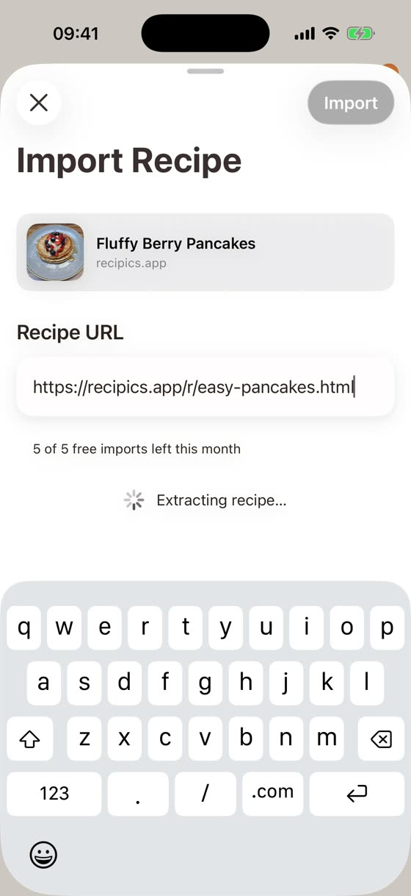
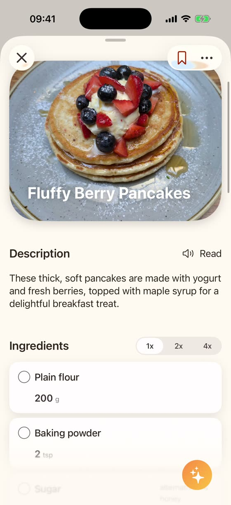
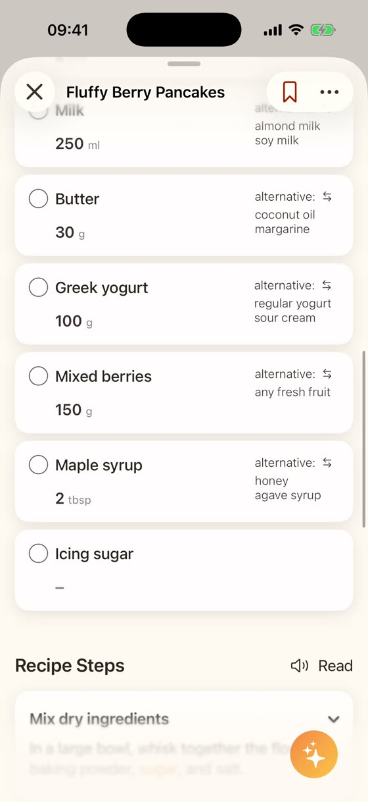

ReciPics
ReciPics
Found a recipe online and don't want to hunt for it again? Copy the link and paste it into ReciPics. The app puts the recipe, with ingredients and steps, into your cookbook. Recipes from many sites end up in one cookbook instead of scattered across bookmarks and notes.
View on the App Store


Real screens from the app. Example: a recipe from our own site recipics.app.
Many recipe websites work, especially those that show the recipe without a login. Results vary by site. On 12 Nov 2026 we successfully imported recipes from chefkoch.de, fooby.ch (German and English) and swissmilk.ch, for example.
Some websites block the import. The app tells you when that happens, and you can snap a photo of the recipe or paste it as text instead.
Recipe is on paper? Digitize handwritten recipes · Scan recipes from cookbooks
Recipes from Instagram or TikTok: Save recipes from Instagram and TikTok
For new users without a paid plan, the number of link imports per month is limited. The app shows how many you have left.
ReciPics is not affiliated with Chefkoch, FOOBY (Migros) or Swissmilk. We name them only to show which sites we tested. Recipes, texts and photos are protected by copyright and belong to their authors or the websites. Use ReciPics for your private cookbook only, and don't republish imported content.
Get ReciPics on the App StoreFor iPhone with iOS 26 or later.